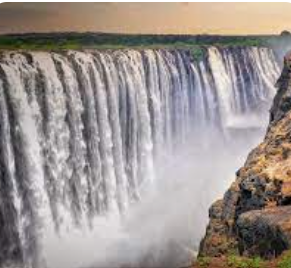

About Me
My name is Derick Shanana, and I live in Bulawayo, Zimbabwe. I love spending time with my family. I enjoy studying the scriptures and pondering on the teachings of the living prophet. I attend church every Sunday and am currently a student at BYU.
Victoria Falls, Zimbabwe
Victoria Falls, located on the Zambezi River between Zimbabwe and Zambia, is the world’s largest waterfall by combined width (1,708 meters) and height (108 meters). Known locally as **"Mosi-oa-Tunya"** or "The Smoke That Thunders," its mist can rise over 400 meters and be seen from miles away. Discovered by David Livingstone in 1855 and named after Queen Victoria, the falls are a UNESCO World Heritage Site and one of the Seven Natural Wonders of the World. Surrounding the falls is a unique rainforest ecosystem supported by its constant spray, with diverse wildlife including elephants, baboons, and hundreds of bird species. Visitors can experience thrilling activities like bungee jumping, whitewater rafting, and swimming in the Devil's Pool at the edge of the falls. During a full moon, a rare "moonbow" can be seen, adding to its allure as one of the worlds most breathtaking natural wonders.
